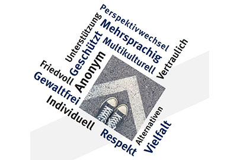
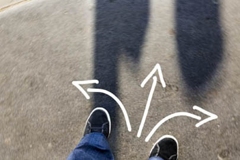

Unser Angebot
Wir beraten junge Menschen, Angehörige, Schulen, pädagogische Fachkräfte und weitere Einrichtungen vertraulich und individuell. Bei Bedarf vermitteln wir an passende Unterstützungsangebote.

Mehr über unser Angebot →Wegweiser ist ein Präventionsprogramm des Landes Nordrhein-Westfalen. Die Beratungsstelle Wegweiser Bonn unterstützt junge Menschen, Familien, Bezugspersonen und Fachkräfte in Bonn, im Kreis Euskirchen und im Rhein-Sieg-Kreis bei Fragen zu Radikalisierung und islamistischem Extremismus.
Unsere Beratung ist kostenlos, freiwillig, vertraulich und individuell. Wir hören zu, ordnen Situationen fachlich ein und entwickeln gemeinsam passende nächste Schritte. Wegweiser ist keine Polizei- oder Sicherheitsbehörde und kein therapeutisches Angebot.
Wir beraten junge Menschen, Angehörige, Schulen, pädagogische Fachkräfte und weitere Einrichtungen vertraulich und individuell. Bei Bedarf vermitteln wir an passende Unterstützungsangebote.

Mehr über unser Angebot →Wegweiser richtet sich an Jugendliche und junge Erwachsene sowie an Eltern, Angehörige, Bezugspersonen, Schulen, Vereine und Fachstellen.

Für wen wir da sind →Wir wollen frühzeitig unterstützen, Radikalisierung vorbeugen, Angehörige stärken und gemeinsam tragfähige Perspektiven entwickeln.
Mehr über unsere Ziele →